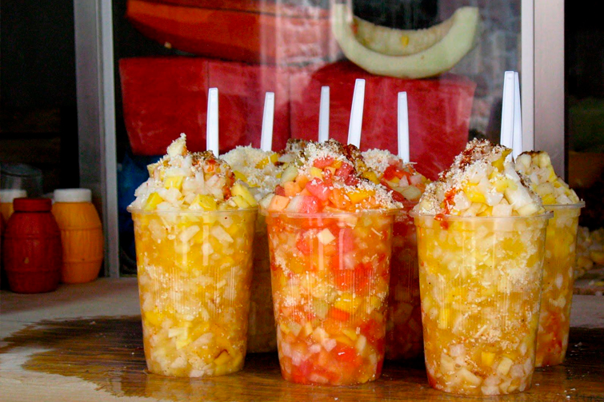

Morelian Gazpacho

On a hot day, nothing compares to this amazingly refreshing fruit cocktail. Originating in street
stalls of Morelos, Mexico, this salad is made with mango, watermelon, pineapple, jicama, cucumber, and
orange juice. It wouldn't be complete without a generous sprinkling of cotija cheese and chili piquín.
Ingredients
- half a watermelon
- 2 mangoes
- 1 jicama
- half a pineapple
- 2 cucumbers
- juice of two oranges
- 200g cotija cheese, finely grated
- chili piquín to taste
Steps
- Peel the watermelon, mangoes, jicama, pineapple, and cucumbers.
- Dice everything into small cubes.
- Juice the oranges.
- Grate the cheese with the fine side of a cheese grater.
- Mix everything together in a large bowl.
- Spoon into cups and top with chili piquín.